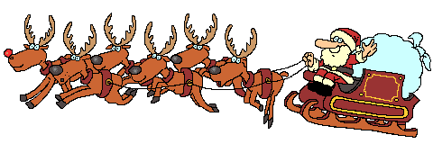

Strona główna
O Mikołaju
Napisz List do Mikołaja

Święta już tuż tuż!
Do Świąt Bożego Narodzenia zostaje coraz mniej czasu. Z tej okazji przygotowaliśmy dla was stronę dzięki której będziecie mogli poczuć świąteczny klimat jeszcze bardziej.
Pomysł na oryginalną choinkę!
Dania na Święta - sprawdzone przepisy
Najpiękniejsze polskie kolędy